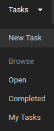
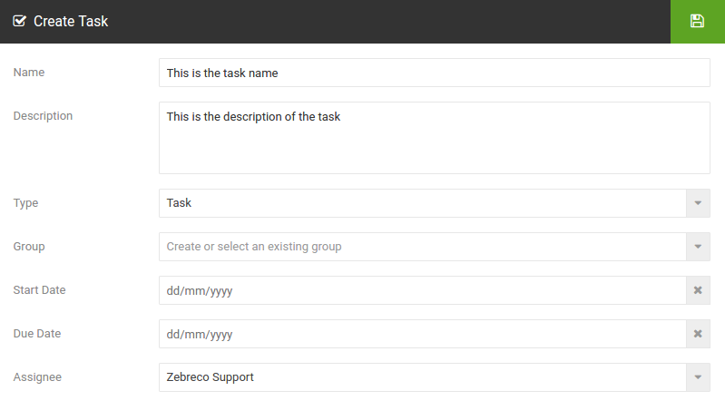
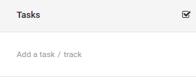
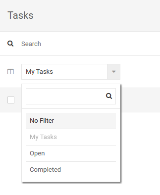
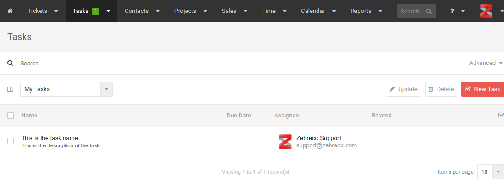
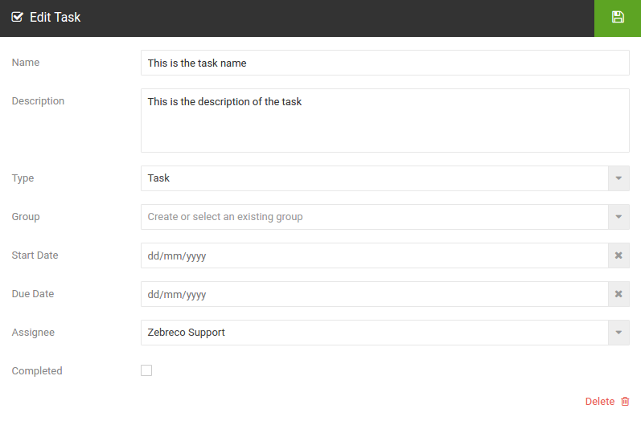
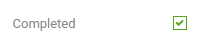
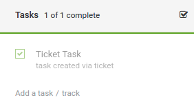

Tasks¶
Tasks provide a simple, actionable, way of creating a reminder of something you need to do.
Creating a Task¶
To create a new task using the main navigation menu, select Tasks > New Task

This will display the Create Task wizard where you can enter the task details.

- Name - Enter the task name.
- Description - Enter a description for the task.
- Type - Set whether the task is a standard task type or if it is an email/call type. If a task is created as an email or call type they will be displayed alongside a relevant icon. These can make for handy reminders.
- Group - Enter an existing or name for a new task group this task will belong to.
- Start Date - Enter a start date for the task. This can be handy for future dating tasks.
- Due Date - Enter a due date for the task. Reminders will be set based on this date.
- Assignee - Who this task will be assigned to.
Creating Tasks via Tickets¶
When viewing a ticket, you can add a task directly to the ticket. On the right hand side you will find the Tasks menu.

Click on Add a task. The process remains the same as creating from the task menu (as above).
Viewing Tasks¶
To view existing tasks using the main navigation menu, select Tasks. The navigation menu has quick links to various filters. These are My Tasks (Tasks assigned to your user), Open and Completed.
Filtering tasks can also be done from the drop down menu found within Tasks. Simply select the filter you would like and the list will be displayed. For this example we have selected 'My Tasks'.

The tasks page lists all tasks under your current filter. You will also notice the green notification number on the navigation menu letting you know how many open tasks are assigned to you from anywhere on the site.

Editing Tasks¶
To edit an existing task, simply select the task to bring up the Edit Task pop-up.

From here you can modify all the task data.
Completing a Task¶
To complete a task bring up the edit window and check the box completed.

Alternatively, via ticket view, you can select the check box on the Task menu on the right hand side.

Note: If you complete a task without adding time on a ticket which is set to be chargeable you will see a warning at this point.
Back to Top
Back to Documentation Menu